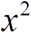

返回主页 标准计算器 科学计算器 程序员计算器 计算器 ☰ Standard 0 %1 √  CE C Back ÷ 7 8 9 × 4 5 6 - 1 2 3 + ± 0 . = 标准 科学 程序员 计算器 ☰ Science 0 ( ) n! Exp sin cos tan log sinh cosh tanh π CE C Back ÷ √ 7 8 9 × % 4 5 6 - 1 2 3 + ↑ ± 0 . = 标准 科学 程序员 计算器 ☰ Programmer 0 HEX 0 DEC 0 OCT 0 BIN 0 A B C D E F ↑ CE C Back ÷ And 7 8 9 × Or 4 5 6 - Not 1 2 3 + ( ) 0 . = 标准 科学 程序员